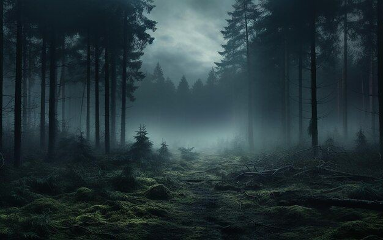
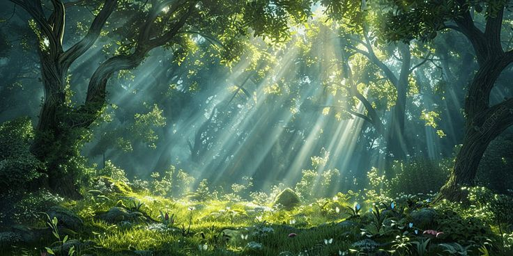
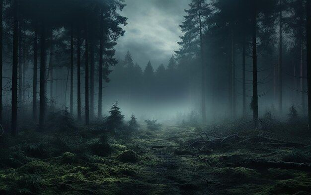
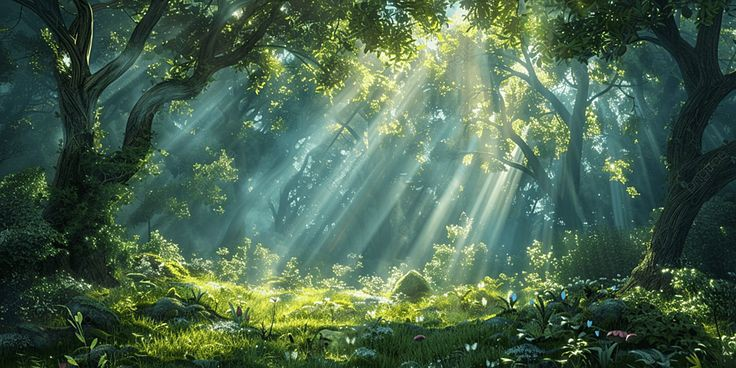

FOREST ADVENTURE
Explore the deep green world of ancient forests and peaceful wildlife.
Read MoreEnjoy smooth animations, atmospheric visuals, and cinematic layouts.
This website is created with a high-end premium design featuring cinematic sliders, animations, and 12 advanced nature categories. Built to deliver a smooth experience across all devices.
Climatica is designed as an immersive digital environment, bringing together nature-inspired visuals, fluid animations, and cinematic motion effects. Every section is crafted to simulate atmosphere, depth, and emotion—creating a browsing experience that feels alive, dynamic, and harmoniously connected to the natural world.
Smooth transitions, atmospheric lighting, and fluid motion.
Optimized for desktop, tablet, and mobile with ultra-sharp rendering.
12 curated nature categories and handcrafted aesthetic visuals.
Step inside a world where sunlight pierces through towering green canopies, the forest breathing with life. Every branch, every moss-covered stone holds centuries of untouched history. This forest section captures the serenity, mystery, and sacred calm of nature’s oldest sanctuary.
ExploreExperience towering mountain ranges cutting through the sky, filled with cold winds, thick clouds, and dramatic cinematic light. A place where scale, silence, and raw natural energy collide into a breathtaking masterpiece.
ExploreCrystal-clear rivers carve their way through stone and soil, creating a gentle rhythm that keeps the world alive. This section captures flow, reflection, and the peaceful harmony of nature in motion.
ExploreFeel the thunderous force of cascading water crashing into ancient rocks below. The heavy mist, sparkling droplets, and roaring echo create a surreal experience that defines the power of nature.
ExploreEndless horizons, dancing heatwaves, and shifting sands create a world sculpted by wind and time. This section captures the silent yet fierce beauty of earth’s hottest realms.
ExploreStep into a frozen paradise where ice sparkles under the cold glare of the sun. The Winter section blends calm, silence, and the pure white power of untouched snowfields.
ExploreSmooth reflections, still waters, and scenic mountain silhouettes merge into a cinematic painting. The Lakes section brings quietness, beauty, and breathtaking clarity.
ExploreAs the first golden rays pierce the horizon, nature awakens in warm gentle light. The Sunrise section reflects hope, clarity, and the beginning of a new cycle.
ExploreEmbrace the deep orange glow as the sun descends behind mountains and seas. This cinematic moment captures warmth, closure, and nature’s evening masterpiece.
ExploreThick fog embracing trees, mountains disappearing into white haze, and an atmosphere of mystery. The Fog section represents the unknown, calm, and surreal beauty of cloud-covered worlds.
ExploreBlue horizons, drifting clouds, and radiant sunlight create a feeling of infinite freedom. A cinematic capture of the endless skies above us.
ExploreLush green layers, dripping leaves, thick humidity, and vibrant wildlife fill this intense world of pure life. The Rainforest section symbolizes energy, growth, and raw natural elegance.
ExplorePeaceful green atmosphere with fresh natural energy.
Majestic peaks rising above the clouds.

Calming streams flowing endlessly through nature.
Powerful drops of nature creating pure mist.
Golden dunes shaped by endless wind.
Cold silent landscapes covered in frost.
Crystal waters reflecting the blue sky.
Warm light greeting the morning air.
Golden hour painting the world beautifully.

Mysterious atmosphere wrapping the horizon.
Endless blue canvas of clouds and light.
Dense life filled with exotic sounds and colors.
 



Feel free to send your feedback or suggestions.